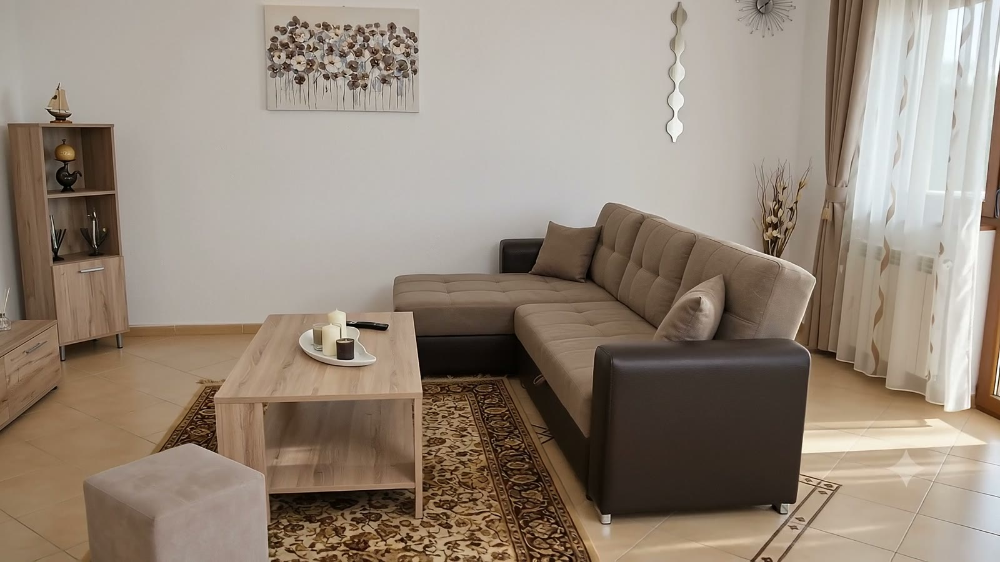
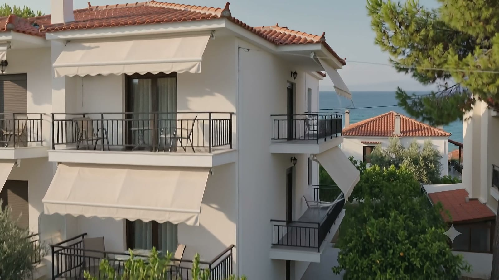
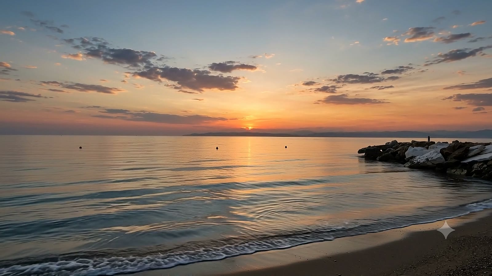

Thassos, by someone who lives it
Honest local guides to the quiet west coast — where to stay, the calmest beaches, family days out, ferries and the drive down from the Balkans.
Accommodation / Decision Hub

Apartment vs Hotel in Thassos for Families: Which Is Better?
Apartment or hotel in Thassos for a family? Honest comparison: space, kitchen, parking, cost and sleep. When each wins — and the west-coast sweet spot.

Where to Stay in Skala Sotiros, Thassos
Where to stay in Skala Sotiros, Thassos: a calm west-coast village with easy parking, a walk-to-beach shore and quiet evenings. Honest local guide.

Where to Stay in Thassos: Every Area Decoded
Where to stay in Thassos: every area decoded — Limenas, Golden Beach, Potos, Limenaria and the quiet west coast. Match the right base to your trip.

Where to Stay in Thassos for Families (2026 Guide)
Where to stay in Thassos for families: areas compared for calm sea, safe beaches, parking and space. Why the quiet west coast wins. Honest local guide.

Where to Stay on the West Coast of Thassos
West coast Thassos accommodation guide: calm afternoon sea, sunsets into the water, easy parking and quiet villages like Skala Sotiros. Local picks.
Beaches
Beaches You Can Walk To in Thassos (Stay Car-Free for the Sea)
Want to stay where the beach is a short walk? The Thassos villages that let you go car-free for swimming — with Skala Sotiros leading the calm west coast.
The Best Beaches Near Skala Sotiros, Thassos
Yes, the beaches near Skala Sotiros are good. The village shore plus the best coves and sights within 10–45 min — honest drive times and warnings.
The Best Quiet Beaches in Thassos — From Someone Who Lives Here
The genuinely quiet beaches of Thassos — calm west-coast water, near-empty coves, honest drive times and what to bring. A local's no-hype guide.
Cazare familii (RO)
Comparisons / Interceptors
Limenaria vs Skala Sotiros: Which Thassos Base Is Right for You?
Limenaria's lively south-coast amenities vs Skala Sotiros' quiet west-coast calm and easy parking. An honest local comparison to pick your Thassos base.
Skala Sotiros vs Golden Beach: Which Is Better for Your Thassos Trip?
Golden Beach vs Skala Sotiros on Thassos: long sandy bustle or quiet west-coast calm? An honest local comparison to help you pick the right base.
Getting There / Road Trip
The Best Base to Explore Thassos by Car
The best base to explore Thassos by car: central-enough, free parking, quiet evenings, with honest day-trip drive times from the west coast.
Thassos Ferry Guide: Keramoti & Kavala (2026)
Both Thassos ferry routes explained: Keramoti to Limenas for drivers, Kavala to Skala Prinos if you fly. Times, tickets, August queue tips.
How to Get to Thassos from Bulgaria by Car
Drive to Thassos from Bulgaria in one easy day: Sofia to Keramoti via Drama/Kavala, tolls, the ferry and easy parking on arrival. Plus where to stay.
How to Get to Thassos from Romania by Car
Drive to Thassos from Romania: full route via Ruse, Sofia and Keramoti, timing, BG vignette, Greek tolls, fuel and the ferry — plus where to stay.
How to Get to Thassos from Serbia by Car
Drive to Thassos from Serbia via Thessaloniki and Kavala to Keramoti: timing, tolls, vignettes, the ferry and easy parking. Plus where to stay.
Trip Planning
7-Day Thassos Itinerary for Families
A relaxed 7-day Thassos itinerary for families from a quiet west-coast base: one beach a day, calm mornings, sunset dinners and the best day trips.
Is Thassos Good for Children? An Honest Guide
Thassos with kids: calm shallow west-coast beaches, easy parking, self-catering, short drives and what to pack. An honest guide for hesitant families.
Villages & Areas
Best Villages in Thassos to Base Yourself
An honest look at the best villages in Thassos — coastal and hill — and which one to choose for a quiet, car-based family or couple's base.
Skala Sotiros: A Quiet West-Coast Village Guide
What Skala Sotiros on Thassos is really like: calm west-coast shore, easy free parking, honest tavernas, sunsets into the sea, and where to base yourself.